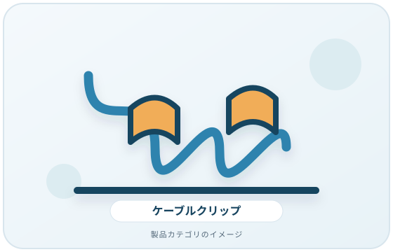
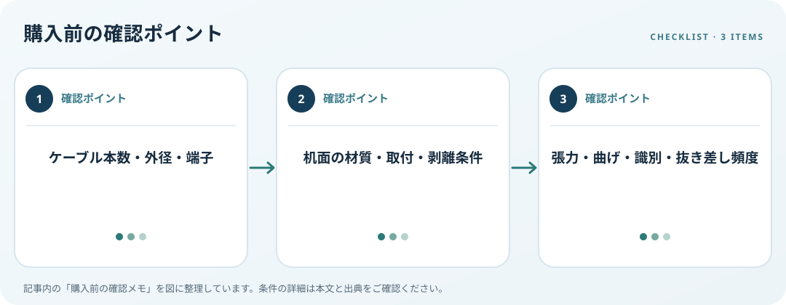

まとめるケーブルの本数や太さ、机面、固定方式、抜き差し頻度を見ます。この記事では仕様の確認順を整理します。
画像・ボタンはAmazonアソシエイトリンクです。適格購入により紹介料を得る場合があります。

Amazon.co.jpで「デスク ケーブルクリップ 配線」を探す ↗

線の本数と径を測る
電源、USB、映像、ネットワークなど固定したい線の本数と外径を測ります。クリップの溝に収まるか、端子を通す必要があるか、あとから線を追加するかを決めます。配線経路を先に作り、コネクターに引張りや急な曲げがかからない余裕を残します。
固定面と取り外し条件
机の材質、塗装、凹凸を調べ、粘着、ねじ、挟み込みなどの固定方式を比べます。貼付式は適合する表面や剥がし方、貼付後の待ち時間などメーカーの注意事項を確認します。電源タップのスイッチや通風口、コンセントを覆わない位置に配置します。
交換や識別も考える
頻繁に抜き差しする線をきつく固定すると交換が難しくなります。ケーブルの行先をラベルで識別し、周辺機器を安全に取り外せる長さを残しましょう。一般的な配線クリップを電気安全用品の代わりとして扱わず、製品の用途表示を確認します。
購入前の確認メモ
- ケーブル本数・外径・端子
- 机面の材質・取付・剥離条件
- 張力・曲げ・識別・抜き差し頻度
この記事は出典の公開情報を購入前の確認項目に整理したもので、特定商品の使用・実測・レビュー・ランキング・価格・在庫の調査は行っていません。購入時には利用機器メーカーの最新仕様をご確認ください。
出典
- Workstation Environment — OSHA（確認日: 2026-10-10）
- Safely remove hardware — Microsoft（確認日: 2026-10-10）